Exports exacts de Figma, nettoyés et vérifiés au pixel. Source : Figma « Botwise — AI-First SaaS Template (Copy) », page Design, section 6002:4.
Scènes (17)
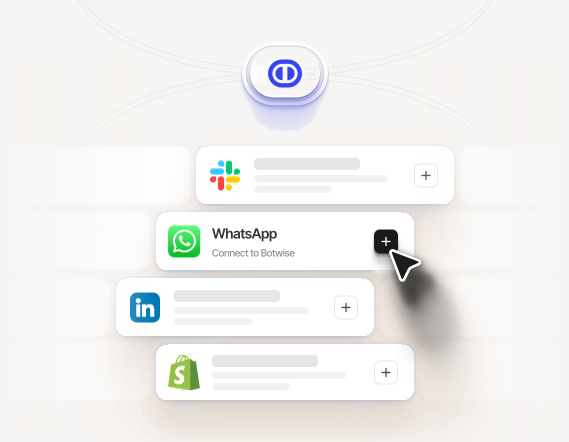
connecter-outilsPile de lignes d’intégration, marque lumineuse, orbites, curseur
nœud 6002:4968 · mixte (marque en calque Figma) + curseur réparé · écart avec Figma 0.52 %trier-messagesCarte de messages dans un cadre double, sur sa patte, app floutée derrière
nœud 6002:360 · SVG nettoyé · écart avec Figma 0.58 %bouclierBouclier métal, marque gravée, câbles, plateau d’avatars
nœud 6002:669 · SVG nettoyé · écart avec Figma 0.13 %
etape-capterLogos ronds reliés à la marque, téléphone avec notification
nœud 4001:51967 · mixte (marque en calque Figma) · écart avec Figma 1.09 %
etape-repondreConversation dans un téléphone, analyse par la marque
nœud 4001:52144 · SVG nettoyé · écart avec Figma 0.1 %
etape-passer-la-mainPilule de transfert sur orbites, grille d’assistance humaine
nœud 4001:52274 · SVG nettoyé · écart avec Figma 0.22 %
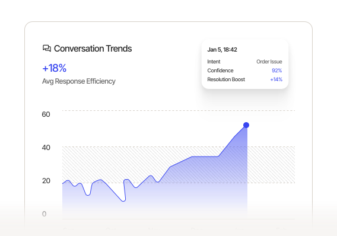
bento-courbeCourbe de tendance avec info-bulle blanche
nœud 6002:721 · SVG nettoyé · écart avec Figma 0.06 %
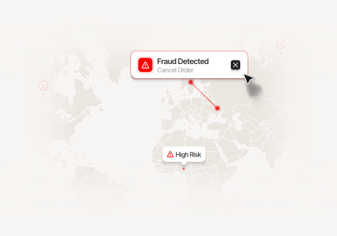
bento-fraudeCarte du monde en points, alerte fraude, curseur
nœud 6002:786 · SVG nettoyé + curseur réparé · écart avec Figma 0.14 %
bento-languesCarte en points avec bulles de langues à drapeaux
nœud 6002:1110 · SVG nettoyé · écart avec Figma 0.03 %
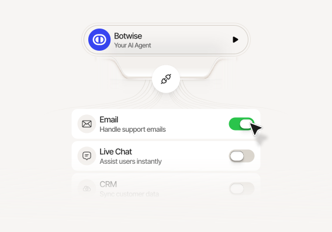
bento-canauxAgent relié aux canaux, interrupteurs, curseur
nœud 6002:4417 · SVG nettoyé + curseurs réparés · écart avec Figma 0.44 %probleme-solutionDeux courbes opposées, marque au centre, rayons rouges et bleus
nœud 6002:4543 · mixte (rayons, marque, hachures en calque Figma) · écart avec Figma 0.52 %
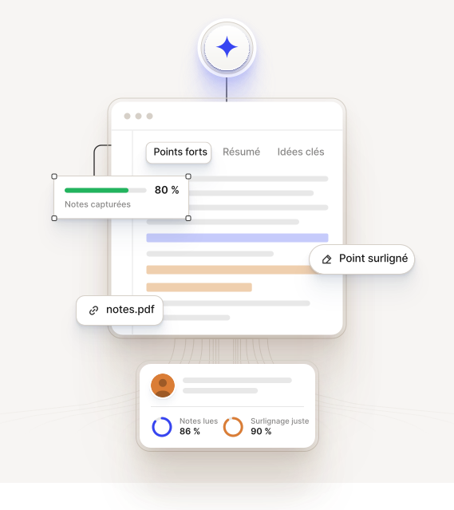
resume-notes-valideVALIDÉE par Louis : fenêtre de notes, marque, étiquettes, câbles fins dessous (sans trame)
nœud 6019:6 · SVG nettoyé · écart avec Figma 0.05 %
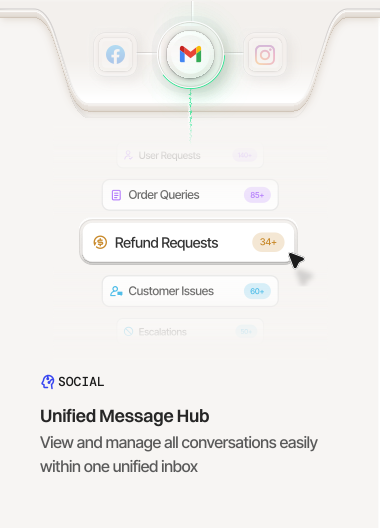
hub-messagesMarque Gmail sur socle en verre, connexion verte lumineuse, liste de catégories
nœud 6018:98 · SVG nettoyé · écart avec Figma 0.35 %
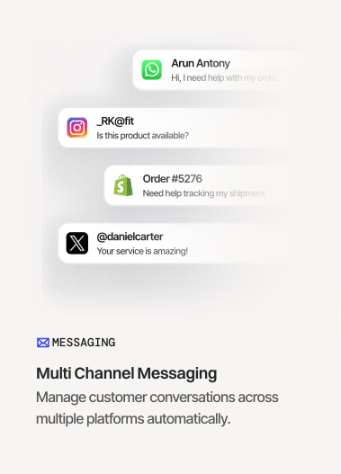
messages-multicanalPile de messages décalés avec logos (WhatsApp, Instagram, Shopify, X)
nœud 6018:218 · SVG nettoyé (écart = anticrénelage du texte) · écart avec Figma 1.66 %reponse-rapidePile de notifications, pilule « génération », chrono 00:03 sur cadran
nœud 6018:264 · SVG nettoyé (écart = anticrénelage du texte) · écart avec Figma 1.51 %
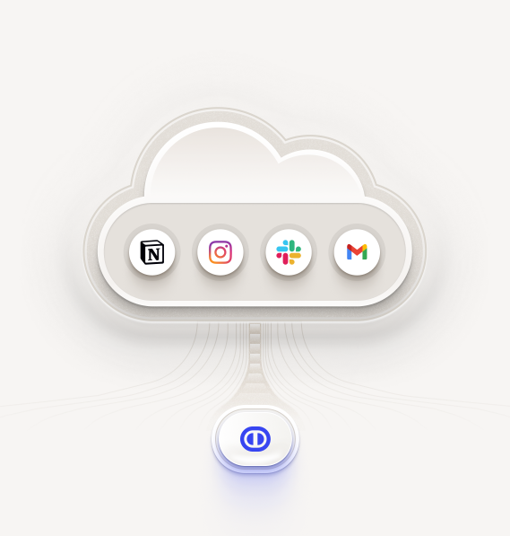
nuage-outilsNuage en relief contenant les logos, câbles fins vers la marque
nœud 6018:354 · SVG nettoyé · écart avec Figma 0.0 %
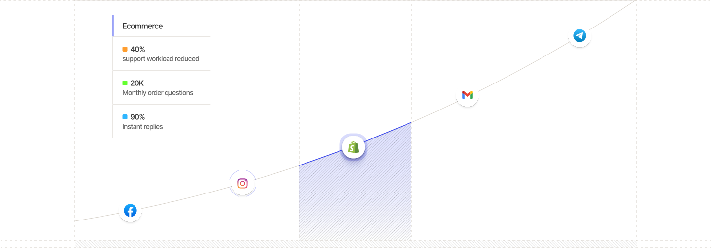
croissanceCourbe de croissance avec logos posés, zone hachurée
nœud 6002:4770 · SVG nettoyé · écart avec Figma 1.43 %